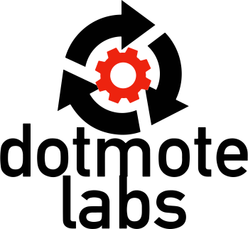

Past Experiences
From June 2021 to September 2021, I worked as a software engineering intern at Dotmote Labs in Seattle, WA. During my time there I created and updated the UI for SWEEP using JavaScript, HTML, and CSS (see here at sweep.run). In addition to UI, I handled the backend as well for the Django web app, using Python and handling API calls to our server and storing data locally in Django's built-in SQL database. The SWEEP app has already been used by for research projects such as sensing in agriculture, satellite imaging, and gene sequencing (see here). Overall, it was a ton of fun and it was great exposure for working in industry!
 From April 2021 to September 2021, I held a position as a part-time undergraduate research assistant at the UW Sensor Systems Laboratory.
My project was to encode and decode sound data into binary bits and then transmit those bits towards a receiver using Python, MATLAB, and a Raspberry Pi.
Throughout my research, I learned how to use speed controllers and oscillocopes and integrated many new features such as automatic audio trimming and faster bit transmission.
At the end of the project, we even got to pitch our idea to public companies such as Boeing!
From April 2021 to September 2021, I held a position as a part-time undergraduate research assistant at the UW Sensor Systems Laboratory.
My project was to encode and decode sound data into binary bits and then transmit those bits towards a receiver using Python, MATLAB, and a Raspberry Pi.
Throughout my research, I learned how to use speed controllers and oscillocopes and integrated many new features such as automatic audio trimming and faster bit transmission.
At the end of the project, we even got to pitch our idea to public companies such as Boeing!